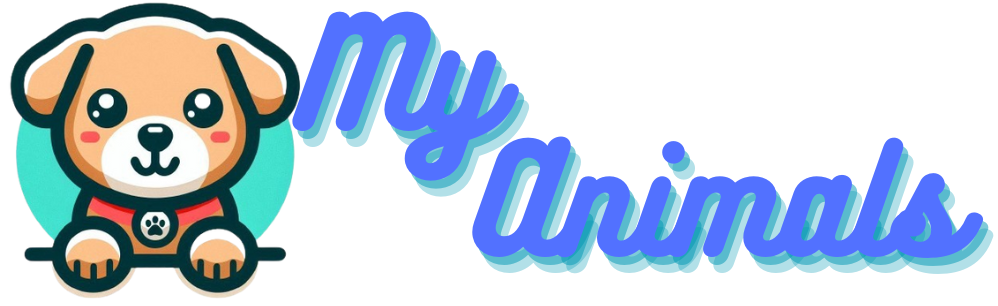

<nav class="sidebar-menu">
  
  <ul>
    <li><a href="#">Home</a></li>
    <li><a href="#">About</a></li>
    <li><a href="#">Contact</a></li>
    <li><button (click)="openAddAnimalModal()">Ajouter Animal</button></li> <!-- Nouveau bouton -->
  </ul>
</nav>
